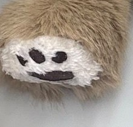

Weight
A removable weighted pouch sits in the lower belly. Deep, even pressure—a hug that stays. Double‑sealed inner pouch with poly pellets, not reachable in normal use; take it out to wash.
Prototype target: Large 3 lb · Small 2 lb
Weighted Sensory Companions
Sowala is a soft, weighted sensory friend: comforting weight to hold close, a removable warm‑or‑cool insert, and a whole map of textures to touch and explore. Designed with children on the autism spectrum in mind.
Inspired by a therapist. Created with love.


The Story of Sowala
Sowala began with a simple act of love.
For years, a therapist dedicated to helping children on the autism spectrum would call her husband while he was out and ask, Can you pick up another sensory toy for one of my kids?
More often than not, she was looking for something soft, comforting, and especially a sloth, because her clients loved holding and cuddling them.
Her husband began noticing how much these simple toys meant to the children. They weren’t just stuffed animals—they could provide comfort, security, and a calming sensory experience.
That inspired an idea: What if he could create a sensory companion designed specifically with these children in mind?
And that’s how Sowala was born—a soft, lovable sensory friend designed with different textures to touch and explore, comforting weight to hold close, and a removable warm‑or‑cool insert for an added soothing experience.
Sowala was inspired by a therapist, created with love, and made to bring comfort—one hug at a time.
The system
Every Sowala combines four sensory functions in one plush. All inserts are removable, so the outer animal goes in the washing machine.
A removable weighted pouch sits in the lower belly. Deep, even pressure—a hug that stays. Double‑sealed inner pouch with poly pellets, not reachable in normal use; take it out to wash.
Prototype target: Large 3 lb · Small 2 lb
A second pocket holds a separate insert. Chill the reusable gel pack in the fridge, or warm the microwaveable, temperature‑limited insert made for plush. No wires, no batteries.
Thermal and weighted materials never share a pouch
Every animal feels different: curly mane, silky ears, ribbed paw pads and a crinkle tail on the Red Panda; long‑pile fur, a smooth face and textured claws on the Sloth. Hidden texture patches—nothing looks clinical.
Minky · corduroy · satin · sherpa · raised dots
One signature feature per animal. Red Panda: a squeezable crinkle tail and ribbed pads for thumb‑rubbing. Sloth: extra‑long hugging arms that wrap around the child and fasten with child‑safe hook‑and‑loop.
Kids pick the animal by the feel they like
What’s inside
An exploded view of the lower belly. The weighted pouch and the thermal insert live in separate pockets behind one hidden flap—so each can be removed, replaced or left out on its own.
The animal itself: long‑pile or curly fur, embroidered face, no loose parts. With both inserts removed it goes in the washing machine.
One fur‑covered opening on the lower belly, closed with child‑safe hook‑and‑loop under the seam. It is not obvious to a child in normal play and needs an adult’s deliberate pull.
The upper pocket takes either the reusable gel pack straight from the fridge or the microwaveable, temperature‑limited insert made for plush products. No electronics anywhere in the toy.
The lower‑belly pocket holds a double‑sealed pouch of poly pellets, so the weight sits low and the animal settles into the lap. Prototype target 3 lb (Large) / 2 lb (Small), to be tuned in testing.
A stitched wall between the two pockets. Thermal and weighted materials never share a pouch—easier to make, clean, replace and test.
Why two pockets and not one? Keeping the thermal insert separate from the weighting material makes manufacturing, cleaning, replacement and safety review much simpler—each insert can be swapped or sold as a spare on its own.
Touch
Textures are built into the animal rather than added on top of it—a child can explore with their hands without the toy looking like equipment. Numbered dots mark where each texture lives.



Signature feature: extra‑long hugging arms that wrap around the child and fasten with child‑safe hook‑and‑loop.


Signature feature: a squeezable crinkle tail plus ribbed paw pads for thumb‑rubbing.
How it works
Three steps, all done by an adult. The weighted pouch stays in for everyday play; the thermal insert goes in when it’s wanted.
Gel pack in the fridge for cool; the temperature‑limited insert in the microwave for warm. An adult checks it is comfortable on their own skin first.
Open the hidden flap, slide the insert into its own pocket above the weighted pouch, and press the flap closed.
The weight settles low in the lap, the insert warms or cools the belly, and the long arms wrap around. Adult supervision with the warm insert.
Sizes & weights
Every size takes the same inserts. Weights are prototype targets for roughly 12–16 inch plush and will be tuned in wear testing rather than defaulting to heavier.

| Companion | Size | Height | Weighted pouch (prototype target) | Inserts |
|---|---|---|---|---|
| Sloth | Large | ≈ 16 in | 3 lb | Gel pack (cool) · microwave insert (warm) |
| Sloth | Small | ≈ 12 in | 2 lb | |
| Red Panda | Large | ≈ 16 in | 3 lb | Gel pack (cool) · microwave insert (warm) |
| Red Panda | Small | ≈ 12 in | 2 lb |
The small sloth also carries a second, sleeping face embroidered on its back—turn it over for a quieter friend. All inserts are sold separately as spares and replacements.
Calm & Fidget
A reason to choose an animal by the sensory input a child prefers, not only by its looks.
The arms are longer than a normal plush and lined with sherpa on the inside. They wrap around the child’s body and meet at the claws with child‑safe hook‑and‑loop, so the animal holds on by itself. No magnets, no clips.
For the child who wants to be held.
A squeezable tail with a crinkle layer inside gives a quiet sound and a give under the hand. The ribbed paw pads on the feet are made for thumb‑rubbing—a small, repeatable thing to do with the hands.
For the child whose hands want something to do.
Safety & positioning
Sowala names its audience and tells its true origin story. It does not make health claims—a children’s product that involves weight and a heated component has to be described carefully and tested properly.
Health‑outcome claims on a consumer product require competent and reliable scientific evidence under FTC rules. Saying who it is designed for is allowed; saying what it will do to them is not.
Not a medical device. Concept prototype — final weights, materials and age grading are subject to third‑party safety testing (ASTM F963 / CPSIA) before sale.
Manufacturing notes
Next steps
Sew the two pockets, the flap and the texture patches into the existing plush. Build 2 lb and 3 lb pouches and the two thermal inserts.
Families try both sizes at home. Tune the pouch weight instead of defaulting to heavier, check the flap stays closed, and see which textures get used most.
ASTM F963 and CPSIA testing at a CPSC‑accepted lab, Children’s Product Certificate, tracking labels, and a review of the warm insert’s instructions.